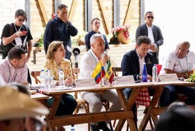

<!Doctype html>
<html>
    <head>
        <meta charset="UTF-8">
        <title>POLITICA</title>
        <style>
            img {
                max-width: 100%;
                height: auto;
            }
        </style>
    </head>
    <meta name="viewport" content="width=device-width, initial-scale=1.0">
</html>

<article><h2>“Concuerdo con Uribe”: Petro acoge propuesta del expresidente a la reforma laboral</h2></article>
<p>En un duro documento, el exmandatario dio a conocer sus reparos al proyecto de reforma laboral del Gobierno, pero el presidente coincidió en una de las propuestas: un acuerdo quinquenal para elevar salarios.</p>

<p>En un duro documento, el exmandatario dio a conocer sus reparos al proyecto de reforma laboral del Gobierno, pero el presidente coincidió en una de las propuestas: un acuerdo quinquenal para elevar salarios.</p>
<p>El expresidente Álvaro Uribe apareció este sábado desde un foro en Cartagena y allí lanzó duras críticas al proyecto de reforma laboral que el Gobierno Petro radicó ante el Congreso el jueves pasado. “En el día de ayer empezamos ya en el partido a trabajar a fondo la reforma laboral”, explicó el líder del Centro Democrático ante los asistentes al encuentro, y enseguida presentó un documento con sus objeciones.</p>
<p>“Reforma laboral será dañina para los trabajadores y para los empresarios”, lleva por título ese documento, en el que también se lee que “esta reforma ilusiona a los trabajadores y después los frustrará”. Según ese texto, lo planteado en el proyecto apunta a que no se genere empleo formal por “exceso de costos y de regulaciones”, pues crearía un aumento superior al 30% en los costos laborales de la pequeña empresa que emplea al 78% de los trabajadores colombianos.</p>
<p>En ese documento, el expresidente dice que la reforma pone a Colombia tanto en la situación de Argentina, como en la de Venezuela. En el primero, donde no hay generación de empleo formal y crece la pobreza; y en el segundo, donde las normas laborales “se convirtieron en incumplibles” y los trabajadores “se ofrecen por la comida”.</p>
<p>“Nosotros hemos propuesto que las nuevas plataformas tecnológicas de servicios, Rappi por ejemplo, paguen y afilien a sus servidores a la seguridad social; sin embargo, la propuesta de aplicarles una legislación laboral inflexible lo único que hará será desmotivar esta dinámica fuente de empleo”, añade el escrito.</p>
<p>Este es el documento completo con los 14 puntos de Álvaro Uribe a la reforma laboral del Gobierno Petro:</p>
<blockquote class="twitter-tweet"><p lang="es" dir="ltr">Reforma Laboral será dañina para los trabajadores y para los empresarios.<br><br>Proponemos como alternativa que se promueva un Acuerdo Quinquenal de Incremento Salarial y de Productividad sin complicar más las normas laborales. <a href="https://t.co/9sT6R7oe2K">pic.twitter.com/9sT6R7oe2K</a></p>&mdash; Álvaro Uribe Vélez (@AlvaroUribeVel) <a href="https://twitter.com/AlvaroUribeVel/status/1637114529606774784?ref_src=twsrc%5Etfw">March 18, 2023</a></blockquote> <script async src="https://platform.twitter.com/widgets.js" charset="utf-8"></script>
<p>Pero fue en una de las propuestas incluidas en ese documento que el presidente Petro estuvo de acuerdo. “Proponemos como alternativa que se promueva un acuerdo quinquenal de incremento salarial y de productividad sin complicar más las normas laborales”, se lee en el texto.</p>
<p>Petro le salió al paso a Uribe y desde su cuenta de Twitter escribió: “No me disgusta la idea de un acuerdo quinquenal para elevar salarios reales de acuerdo a la productividad, lo propuse en campaña y concuerdo con Uribe”. Y enseguida precisó: “pero ese artículo debe figurar en la actual reforma laboral y no sustituirla”.</p>
<article><h2>Presidente Petro se reuniría nuevamente con Nicolás Maduro en Caracas</h2></article>
<p>El presidente colombiano viajaría a Venezuela el próximo lunes festivo, 20 de marzo. Esta sería la quinta vez que ambos mandatarios se reúnen desde que Petro asumió como presidente.</p>


<p>En el marco del restablecimiento y consolidación de la relaciones entre Colombia y Venezuela, el presidente Gustavo Petro volvería a viajar a Caracas el próximo lunes festivo, 20 de marzo, para reunirse nuevamente con el mandatario de ese país, Nicolás Maduro. Así lo dio a conocer</p>
<p>Esta sería la quinta vez en que ambos se reúnen desde que Gustavo Petro asumió como presidente de Colombia. La última ocasión en la que se encontraron fue el pasado 16 de febrero en el Puente Internacional de Tienditas o Puente Internacional Atanasio Girardot, en donde firmaron un acuerdo comercial que ya estaba vigente y que fue revisado por una delegación de ambos países.</p>
<p>Se prevé que esta nueva reunión tenga como principal objetivo el de evaluar la relaciones bilaterales, desde que se reactivó la correspondencia entre ambos países. Si bien la reunión tendría lugar el lunes, la agenda del presidente podría cambiar, como ya ha ocurrido en otras ocasiones.</p>
<p>Respecto a los temas, el presidente Petro se ha interesado en fortalecer las relaciones comerciales y revisar la situación tras la reapertura de los puentes fronterizos, así como en las trochas, en donde ha habido denuncias por el movimiento de economías ilegales.</p>
<p>En el último encuentro, cuando ambos gobiernos firmaron la actualización del “acuerdo de alcance parcial de naturaleza comercial número 28“, buscaron impulsar la complementariedad en el comercio de bienes a través de la diversificación productiva, “formando cadenas de valor que respondan a las nuevas realidades económicas de ambas naciones”.</p>
<p>Por otro lado, la última vez que se reunieron en Caracas fue el pasado 7 de enero, cuando Maduro recibió a Petro en el Palacio de Miraflores por segunda vez. En esa ocasión también hicieron una evaluación sobre la agenda binacional.</p>

<article><h2>“Las elecciones regionales de octubre están en riesgo”: registrador Alexander Vega</h2></article>
<p>En el marco de la cumbre de gobernadores que se desarrolla en Tebaida, Quindío; el registrador señaló que ante las denuncias que ha recibido sobre la situación de orden público, “está en riesgo el proceso electoral para el mes de octubre”.</p>

<p>Gobernadores de 26 departamentos del país y funcionarios del Estado, como la Procuradora Margarita Cabello y el Registrador Alexander Vega se reúnen este viernes, 17 de marzo, en un encuentro de gobernadores en Quindío, de cara a las elecciones regionales de octubre y a la discusión en el Congreso del Plan Nacional de Desarrollo (PND).</p>
<p>La reunión ya dejó una primera conclusión: de acuerdo con los gobernadores, los territorios se encuentran en medio de una grave situación de orden público, lo que les preocupa en términos de la seguridad y de las garantías para las elecciones que se avecinan.</p>
<p>En ese sentido, los mandatarios pidieron una reunión urgente con el ministro del Interior, Alfonso Prada y con las autoridades correspondientes para que haya garantías suficientes de cara a los comicios. Por ejemplo, el gobernador de Sucre, Héctor Olimpo Espinosa Oliver, dijo que el “tal cese al fuego y de hostilidades no existe. Lo que se ha visto es un incremento de la violencia en el Caribe, falta de articulación y ausencia de la política de seguridad”, dijo.</p>
<p>Por otro lado, el Gobernador de Santander, Mauricio Aguilar, manifestó que la violencia ha aumentado en su región: “El Gobierno Nacional se ha hecho el de la vista gorda, de los oídos sordos y tan solo en los últimos dos meses y medio han sido asesinadas 32 personas en este territorio”, señaló.</p>
<blockquote class="twitter-tweet"><p lang="es" dir="ltr">El <a href="https://twitter.com/MinInterior?ref_src=twsrc%5Etfw">@MinInterior</a> <a href="https://twitter.com/alfonsoprada?ref_src=twsrc%5Etfw">@alfonsoprada</a> defendió el desarrollo de sesiones extraordinarias del Congreso de la República, en la que implementaron una estrategia de radicar un paquete legislativo fuerte para descongestionar el período ordinario que inició esta semana <a href="https://twitter.com/hashtag/EncuentroDeGobernadores?src=hash&amp;ref_src=twsrc%5Etfw">#EncuentroDeGobernadores</a> <a href="https://t.co/dDg0t5qHbI">pic.twitter.com/dDg0t5qHbI</a></p>&mdash; FND - Federación Nacional de Departamentos (@FNDCol) <a href="https://twitter.com/FNDCol/status/1636766483941560320?ref_src=twsrc%5Etfw">March 17, 2023</a></blockquote> <script async src="https://platform.twitter.com/widgets.js" charset="utf-8"></script>
<p>Al evento llegaría esta tarde el presidente Gustavo Petro, así como algunos congresistas de las comisiones económicas (tercera y cuatro), que desarrollarán una audiencia pública en el territorio sobre el PND. Igualmente, el ministro Prada ya se encuentra en Tebaida, Quindío; igual que el presidente del senado, Roy Barreras.</p>
<p>Frente a las denuncias de los gobernadores, el registrador Alexander Vega, quien participa en el encuentro, dijo que con las denuncias que han recibido por parte de los gobernadores, “queda claro que está en riesgo el proceso electoral para el mes de octubre en las elecciones regionales”, aseguró.</p>
<blockquote class="twitter-tweet"><p lang="es" dir="ltr">En el <a href="https://twitter.com/hashtag/EncuentroDeGobernadores?src=hash&amp;ref_src=twsrc%5Etfw">#EncuentroDeGobernadores</a> Quindío 2023, le preguntamos al Registrador Nacional, Alexander Vega, ¿cuál es el panorama frente a las próximas elecciones territoriales que se realizarán en octubre?<a href="https://twitter.com/Registraduria?ref_src=twsrc%5Etfw">@Registraduria</a> <a href="https://t.co/Wso3zxDuxA">pic.twitter.com/Wso3zxDuxA</a></p>&mdash; FND - Federación Nacional de Departamentos (@FNDCol) <a href="https://twitter.com/FNDCol/status/1636453277125558276?ref_src=twsrc%5Etfw">March 16, 2023</a></blockquote> <script async src="https://platform.twitter.com/widgets.js" charset="utf-8"></script>
<p>“A raíz de las denuncias graves en departamentos como Meta, Antioquia, Cauca Chocó y Norte de Santander, hemos firmado una misiva conjunto con la Procuradora General de la Nación y el presidente de la Federación Nacional de Departamentos, donde le hemos pedido al presidente de la República garantizar el orden público”.</p>
<p>Por su parte, la procuradora Cabello dijo que “es importante citar o solicitar para que se haga una reunión urgente de orden público a efectos para que con los altos mandos podamos conversar para que haya las mejores soluciones para que se de una transparencia electoral”, aseguró.</p>
<article>
   <div id="autor">
   <p>Jorge Andres Mesa Garavito</p>
   </div>
   </article>